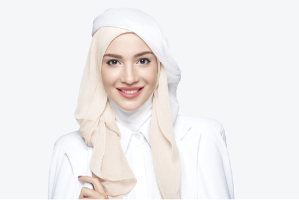
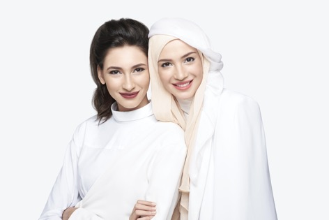
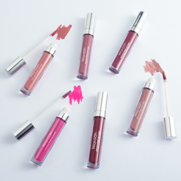

Lipstick matte kini banyak digemari karena teksturnya yang kering dan warnanya lebih terlihat menempel di bibir. Lipstick matte juga cocok untuk segala suasana dan bentuk bibir. Yang perlu kamu perhatikan adalah pemilihan warnanya dan tentu saja yang kandungannya dapat menjaga kelembaban bibir.

Pilih Warna Lipstick Sesuai Mood
Ada yang bilang bahwa cara orang memilih warna lipstick menunjukkan suasana hatinya saat itu. Benar atau tidak, ya? Penelitian yang pernah dilakukan ditemukan kalau wanita yang suka mengganti warna lipstick cenderung moody. Sedangkan wanita yang jarang mengganti warna lipstick atau bahkan konsisten dengan satu warna lipstick tertentu memiliki emosi yang cenderung stabil.
Namun begitu, tidak selalu wanita yang suka mengganti warna lipstick lantas moody. Meski punya banyak koleksi warna, seseorang biasanya cenderung menyukai satu warna tertentu. Dan warna-warna lainnya hanya “koleksi” yang dipakai pada waktu tertentu.

Buat Warna Lipstick Favoritmu Dengan Wardah Intense Matte Lipstick
Wanita umumnya memiliki lebih dari satu warna lipstick. Setiap warna-warna ini digunakan untuk acara yang berbeda-beda atau bahkan sesuai dengan suasana hati. Mulai dari yang jenisnya glossy hingga matte, lipstick dapat memberikan sentuhan akhir yang lebih berwarna untuk gaya makeup kamu sehari-hari.
Nah, kini Wardah menghadirkan Intense Matte Lipstick dengan 12 warna perpaduan nude dan bold. Warna-warna ini bahkan bisa kamu kombinasikan untuk membuat warna baru yang unik untuk bibirmu. Memiliki kemasan yang sama persis dengan pendahulunya Wardah Longlasting Lipstick, Intense Matte Lipstick ini memiliki formula yang didesain khusus agar tidak membuat bibir kering. Meski matte, lipstick ini mampu melembabkan bibir meski dipakai seharian berkat formula supreme moisture charge. Selain itu, teksturnya juga sangat lembut saat dioleskan di bibir hingga terasa sangat creamy.

Bentuk Bibir Cantik Dengan Wardah Exclusive Matte Lipcream
Semakin berkembangnya tren kecantikan, peminat lipstick cair pun semakin banyak. Apalagi yang teksturnya matte dan tidak membuat bibir kering. Salah satunya adalah Wardah Exclusive Matte Lipcream. Meski hasil akhirnya kering, namun lipstick ini tidak membuat bibir kering meski dipakai seharian, lho.
Nah dalam pengaplikasiannya, lipstick cair biasanya menggunakan aplikator yang beragam bentuknya. Ini juga yang banyak dikeluhkan banyak pecinta lipstick karena jenis lipstick dengan aplikator cenderung sulit digunakan dan membentuk bibir dengan rapi. Namun, khusus untuk Wardah Exclusive Matte Lipcream, aplikatornya berupa kuas yang runcing yang memudahkan kamu untuk memoles lipstick.